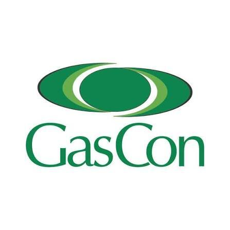

Internship at GasCon
Elsies River, Cape Town | Jun 2024 – Jul 2024


GasCon is a pressure vessel manufacturer based in Elsies River, Cape Town. Between June and July 2024, I did a five-week internship with them where I shadowed various aspects of the company (including getting familiar with their extensive manufacturing facility) but was based primarily in the mechanical testing lab and the mechanical workshop. The work I did varied but included:
- Assisting with mechanical testing (tensile and Charpy impact tests)
- Investigating faults in a Vickers hardness testing machine and testing its accuracy
- Creating documentation for the lab's ISO 9001 accreditation application
- Turning and milling parts in the mechanical workshop